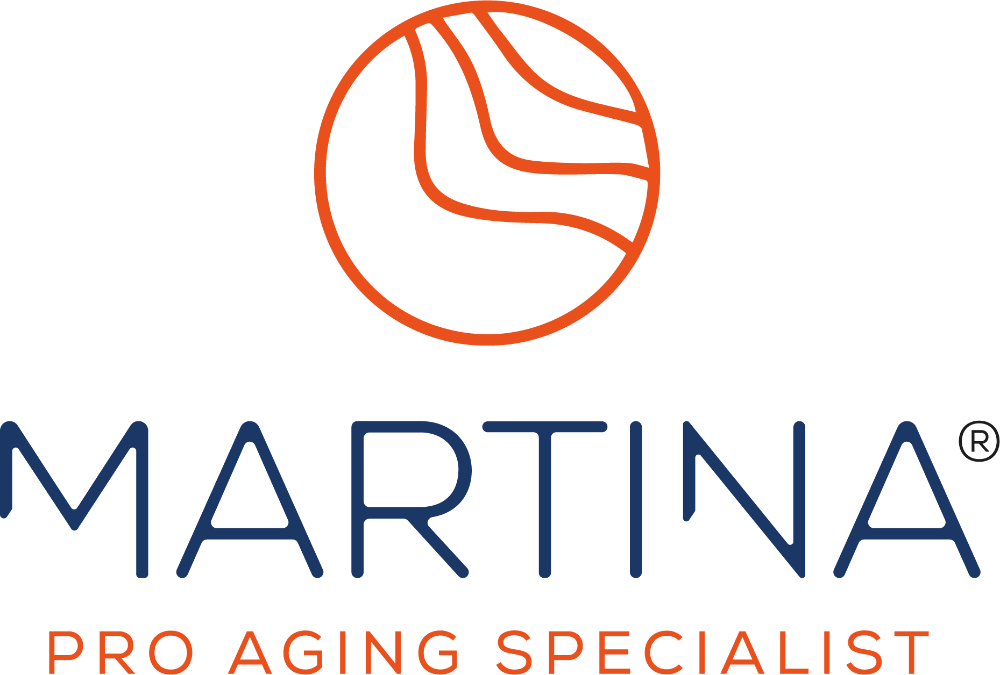

Tutto quello che devi sapere sulla piattaforma martinabindi.com, il metodo, il test di maggio e la strategia di comunicazione.
martinabindi.com è il tuo programma pro-aging personale: esercizi corpo, massaggi viso e percorsi strutturati per donne in menopausa che vogliono tornare a riconoscersi.
Non è un canale YouTube. Non è un archivio di video. È un programma strutturato giorno per giorno, con livelli di intensità e percorsi progressivi. L'utente sa esattamente cosa fare ogni giorno.
YouTube ti ha fatto conoscere Martina. La piattaforma è il passo successivo. Qui il percorso diventa strutturato, personale e pensato per il corpo di una donna in menopausa — sicuro, calibrato, efficace. Il viso non lo fa nessuno così.
Il profilo della donna a cui parliamo. Non una persona immaginaria — è la sintesi delle tue clienti reali.
Sapere esattamente cosa fare ogni giorno
Poco tempo: da 5 a 30 minuti
Esercizi sicuri per il suo corpo adesso
Risultati visibili su corpo e viso
Non sentirsi sola: una guida, non un archivio
Due percorsi principali — corpo e viso — con struttura giornaliera, livelli di intensità e tracking del progresso.
7 card giornaliere in homepage. L'utente apre la piattaforma e sa subito cosa fare oggi.
All'ingresso l'utente sceglie il suo livello. Può cambiare in qualsiasi momento.
Ogni percorso mostra il completamento 0–100%. L'utente vede dove sta andando.
Gli esercizi sulla piattaforma si ripetono identici ogni settimana per 2 mesi. Non è un limite — è la scelta che fa funzionare tutto il resto.
Il primo test della piattaforma. Non è un lancio — è una validazione a pagamento con un gruppo ristretto.
Richiesta video-recensione, in cambio di prodotti bSoul o periodo di accesso più lungo. Diventa testimonial.
Contatto diretto: call, email o WhatsApp. Capire cosa non ha funzionato e migliorare prima del lancio.
Il test dura circa 2 mesi, cioè esattamente un ciclo di esercizi. Le tester sperimenteranno solo la ripetizione, senza mai vivere il cambio di esercizi. È fondamentale comunicare chiaramente che stanno testando il primo ciclo, e che il secondo ciclo (con esercizi nuovi) arriverà dopo.
Se la ripetizione è una sorpresa, è un difetto. Se è dichiarata e spiegata, è una scelta autorevole.
Un video lo guardi una volta. Un programma lo segui. Cambiare il frame cambia l'aspettativa: nessuno si lamenta che il programma di fisioterapia ripeta gli stessi esercizi.
L'utente deve capire che la ripetizione è il metodo prima di pagare. Se lo scopre dopo, è una delusione. Se lo sa prima, è una scelta consapevole.
Genoveffa ha paura di farsi male e di non eseguire correttamente. La ripetizione risponde esattamente a quel bisogno: tempo per imparare, sicurezza nell'esecuzione.
La ripetizione diventa noiosa quando non si percepisce avanzamento. Il tracking 0–100% aiuta. In più: suggerire il passaggio al livello successivo e usare i Focus come varietà opzionale.
Il team MPAS è un sottoinsieme del team bSoul. Nessuna risorsa è dedicata esclusivamente — priorità e carichi vanno coordinati.
Project management, coordinamento, strategia business e marketing, automazioni, allineamento con bSoul.
Protagonista di tutti i video e percorsi. Volto della piattaforma. Decide temi e direzione dei contenuti.
Registrazione, montaggio, pubblicazione video. Thumbnail e materiali grafici. Si coordina con Martina per le sessioni.
WooCommerce, piattaforma martinabindi.com, supporto tecnico e interfaccia con agenzia di sviluppo.
Copy per email, landing page e comunicazioni. Non dedicata a MPAS — disponibile su richiesta.